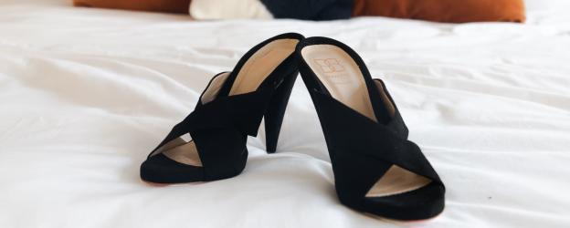
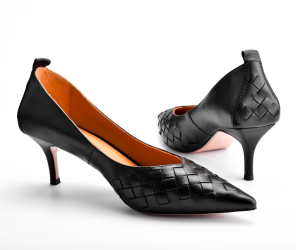
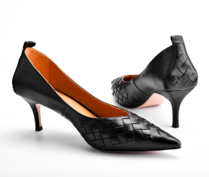
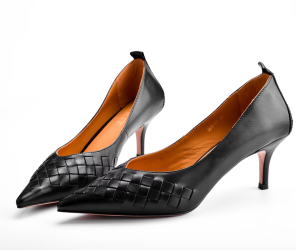
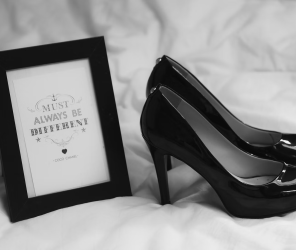

Featured Products

 



One feels more comfortable when given some extra padding. An outsole can also help reduce discomfort through added impact absorption.
An heel that secures your foot and ankle from the front and back. If your high heels are easy to slip out of, they will be more difficult to walk in.
Placement of the heel is vital. The heel is in the center line of the heels sits directly under the center of your own heel. Moreovers replaceable top piece.

The wider the heel, the greater the stability. If you have difficulty walking in heels or have any sort of balance issues, a thicker heel is recommended.